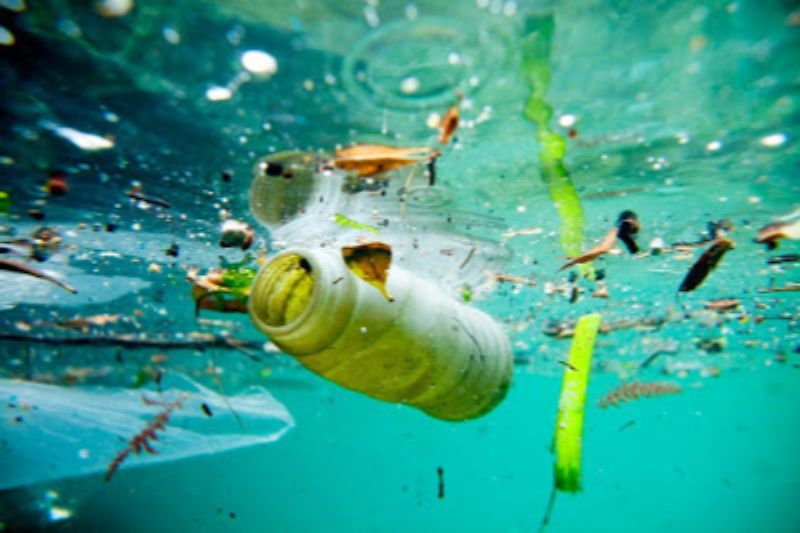

ABOUT US
This website aims to help and share knowledge about an occuring social problem that may have dire effects on us and our world when not taken action against. This social issue is 'Water Pollution'. There are a lot of unfortunate things that may happen when Water Pollution is not known and not taken careful measures of. Water contamination occurs when pollutants contaminate water sources and render the water unfit for use in drinking, cooking, cleaning, swimming, and other activities. Chemicals, garbage, bacteria, and parasites are examples of pollutants. Water is eventually contaminated by all types of pollution. Lakes and oceans become contaminated by air pollution. Land contamination may contaminate an underground stream, a river, and ultimately the ocean. As a result, trash thrown on an empty lot can eventually contaminate a water source. Water pollutants may cause disease or act as poisons. Bacteria and parasites in poorly treated sewage may enter drinking water supplies and cause digestive problems such as cholera and diarrhea. Hazardous chemicals, pesticides, and herbicides from industries, farms, homes, and golf courses can cause acute toxicity and immediate death, or chronic toxicity that can lead to neurological problems or cancers. Many water pollutants enter our bodies when we use water for drinking and food preparation. The pollutants enter the digestive tract. From there, they can reach other organs in the body and cause various illnesses. Chemicals come into contact with the skin from washing clothes or from swimming in polluted water and may lead to skin irritations. Hazardous chemicals in water systems can also affect the animals and plants that live there. Sometimes these organisms will survive with the chemicals in their systems only to be eaten by humans, who may then become mildly ill or develop stronger toxic symptoms. The animals and plants themselves may die or not reproduce properly.
GET INVOLVED
All life on Earth depends on water as a resource. Human health problems like cancer or cardiovascular disorders may result from a contaminated water source due to pollution. A person who wants to lessen water pollution can do so by using less plastic, recycling plastics when they can, properly disposing of household chemicals, maintaining their car to prevent it from leaking dangerous chemicals, avoiding pesticides, cleaning up dog waste, choosing sustainable foods and beverages, thinking about going vegan or vegetarian, and many other things. A serious environmental problem, water pollution can be brought on by a variety of substances. Polluted water can have an impact on human health if consumed, used for swimming, or washed in. There are numerous approaches of reducing water contamination. It all starts with you, the solution.
{kind=link}